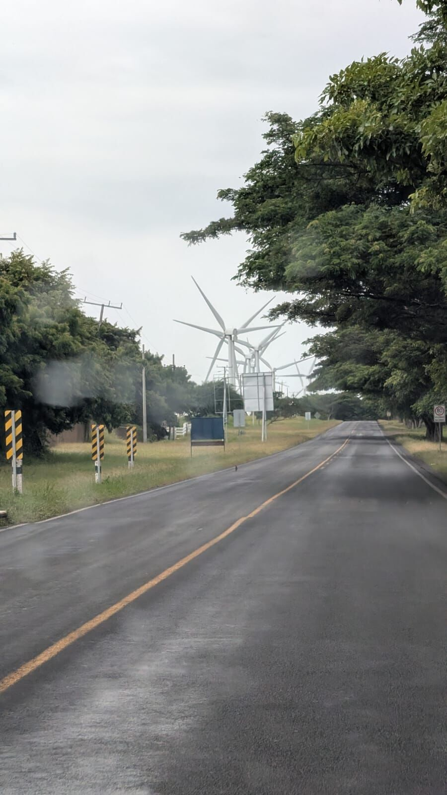
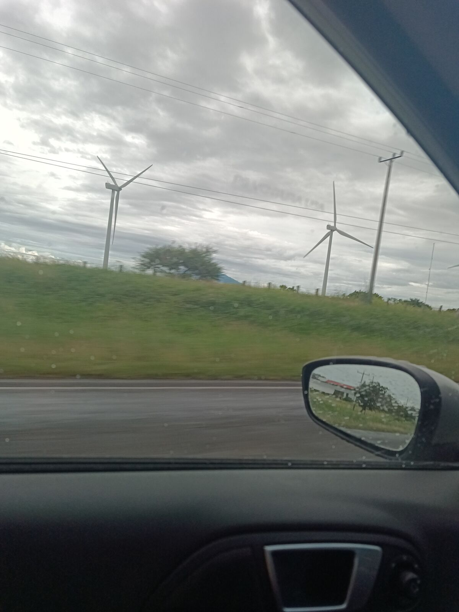
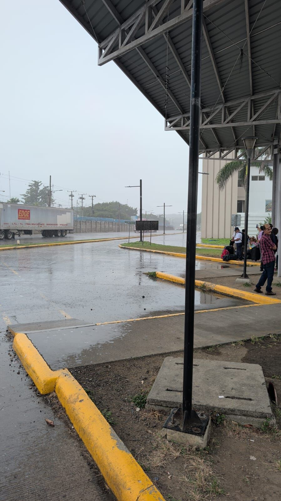
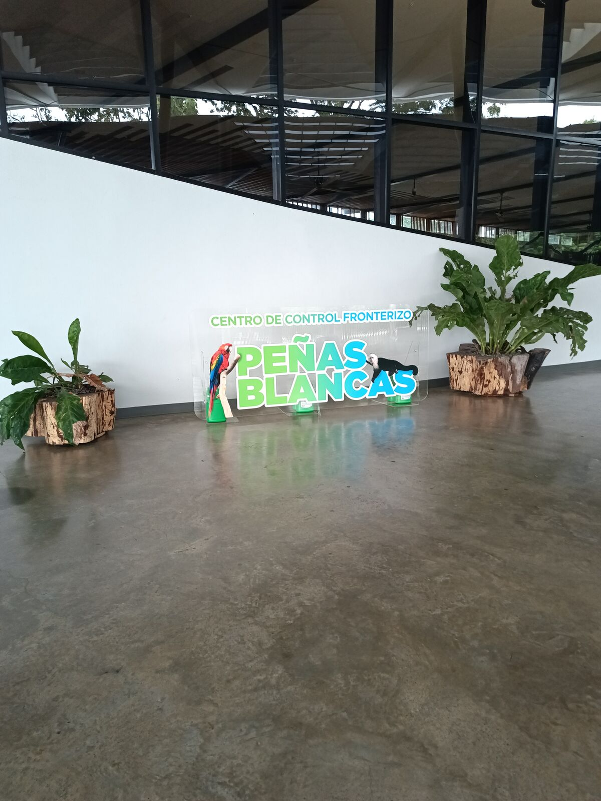
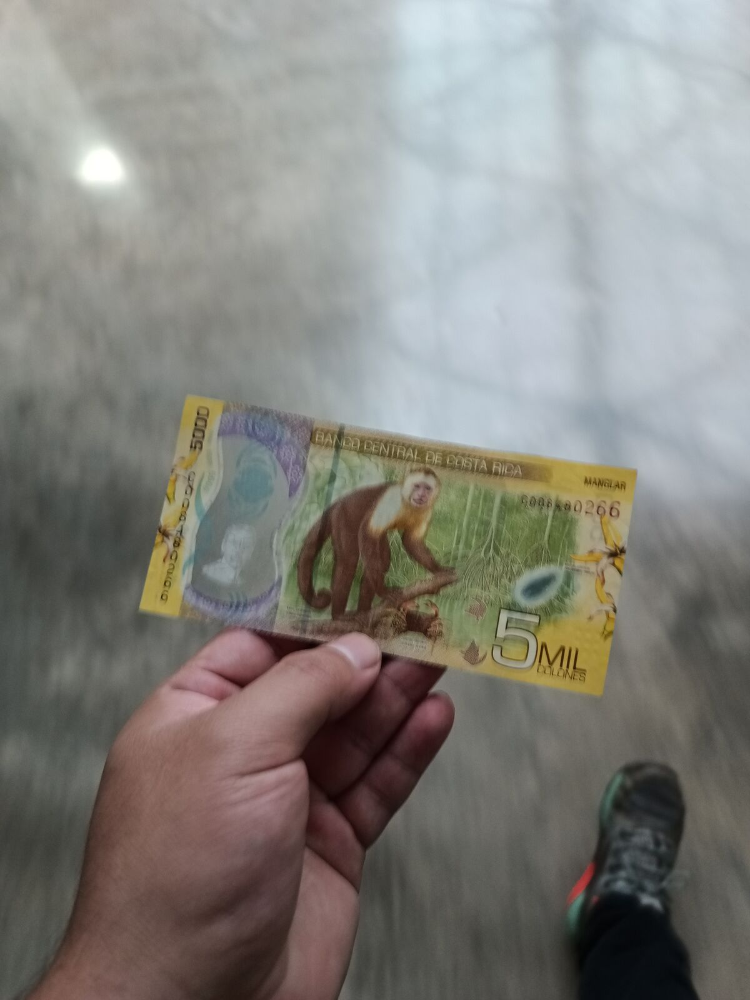
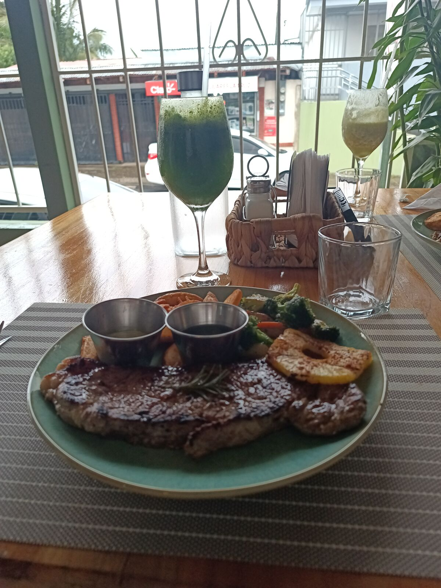
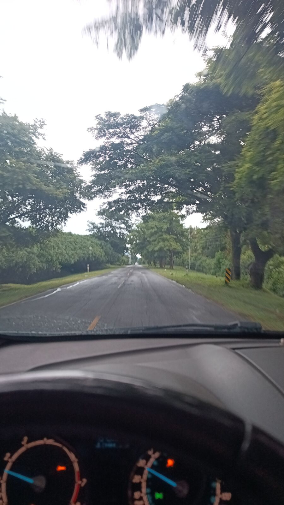

Pura vida
Endlich sind wir in Costa Rica angekommen. Nicaragua verabschiedete uns auf der Route nach Peñas Blancas mit spektakulären Windrädern. Es ist der zweite Windpark, den ich unterwegs sehe, und ihr könnt euch nicht vorstellen, wie riesig sie sind, bis man direkt neben einem steht und die ganze Größe sieht.


Es war ein bewölkter, stürmischer, regnerischer Tag, aber schön, weil es nicht so heiß war. Beim Frühstück entschuldigte sich der Mann, den ich für den Hotelbesitzer halte, bei uns, weil das Wetter nicht ideal war, und wir waren total zufrieden, weil es bewölkt war. Ich sagte ihm: „Keine Sorge, so mögen wir den Strand, ohne viel Sonne, dann verbrennen wir uns nicht“. Er sagte: „Die anderen Touristen mögen eben Sonne und Strand“, und ich so: hahaha, wir nicht, ehrlich herrlich.
Wir tankten für ungefähr 450 Quetzales, etwas weniger, als ich in Guatemala zahlen würde. Also ja, Benzin ist in Nicaragua auch billiger.
An der Grenze mussten wir als Neulinge fast dreimal so lange warten. Deshalb hier ein paar Tipps, um ein Auto über die Grenze Peñas Blancas von Nicaragua nach Costa Rica zu bringen (ein Tutorial für die Einreise mache ich später):

1. Nehmt Kopien eures Reisepasses mit.
2. Nehmt Bargeld mit, etwa 35.000 Colones, die ihr in Costa Rica braucht. Ihr könnt an der Grenze bei Leuten tauschen, aber beim Kurs nehmen sie euch richtig aus, also nehmt lieber etwa 50 oder 60 Dollar mit.
3. An der nicaraguanischen Grenze verlangt die Gemeinde Rivas 1 Dollar pro Person, wenn ihr keine Nicaraguaner seid.
4. Mit Fahrzeug gibt es mehrere Schritte. Ich empfehle diese Reihenfolge:
4.1. Vor dem Grenzgelände steht ein Polizist, der euch ein Erklärungsformular gibt. Füllt es aus wie sonst bei jeder Aus- oder Einreise (kurios, denn in Peñas Blancas war das Formular anders als in El Guasaule).
4.2. Erledigt die normale Passkontrolle. Als Ausländer, auch aus Mittelamerika, zahlt ihr 3 Dollar am Schalter; wieder: Bargeld mitnehmen, denn nichts kann mit Karte bezahlt werden.
4.3. Nach dem Ausreisestempel und der ausgefüllten Erklärung geht ihr zur Tür hinaus und um das Gelände herum, genau dorthin, wo ihr das Auto zuerst geparkt habt. Dort ist ein Inspektionshäuschen: Man verlangt die Erklärung, den Pass, den Führerschein und die Fahrzeugpapiere und kontrolliert dann das Auto.
4.4. Dann wird die Inspektion abgezeichnet, und ihr geht zur Polizei nebenan, die dieselben Papiere sehen will und noch einmal unterschreibt.
4.5. Jetzt kommt der komplizierte Teil: Geht durch die Migration hinein und fragt nach dem Schalter für Fahrzeugangelegenheiten. Ich musste den auf der Einreiseseite nach Nicaragua benutzen. Da wir ein Fahrrad dabeihatten, mussten wir auch zum Warenzoll und bekamen eine weitere Unterschrift; das ist die dritte. Hier müsst ihr eine Passkopie abgeben.
4.6. Geht zur letzten Kontrolle am Schalter daneben, und wenn alles stimmt, könnt ihr Nicaragua endlich verlassen.
Dieses ganze Hin und Her habe ich im Regen gemacht, und es hat etwa 2 Stunden gedauert, also macht es nicht wie ich.
Wir fuhren auf die costa-ricanische Seite, und das ist eines dieser Dinge, die man als Mittelamerikaner schon weiß: Die Ticos haben ihren Stolz HAHAHAHA, und zu Recht. Wir kamen in ein überdachtes Terminal mit glänzendem Keramikboden, der Wachmann freundlich, alle freundlich, und die Einreise dauerte 10 Minuten. Hier waren wir diejenigen, die Fehler gemacht haben.

Was ihr braucht, um mit einem guatemaltekischen Auto nach Costa Rica einzureisen:
1. Zur Grenze fahren und die normale Passkontrolle erledigen.
2. Zum Schalter gehen, wo ihr ein Formular zum Ausfüllen bekommt.
3. Die Versicherung bezahlen, etwa 31.000 Colones, ungefähr 60 Dollar.
4. Zurück zum Schalter, damit das Auto inspiziert wird.
5. Der Vehitur-Schalter zertifiziert euch und gibt euch einige Papiere. Verliert sie nicht.
6. Willkommen in Costa Rica!
Wir verbrachten 4 Stunden mit Formalitäten: auf der nicaraguanischen Seite, weil wir den Ablauf nicht kannten, und auf der costa-ricanischen, weil wir nicht genug Bargeld hatten. An der Grenze tauschte man mir Quetzales in 30.000 Colones; ich stand an und alles, und dann stellte sich heraus, dass es jetzt 31.000 sind, also musste ich zum Geldautomaten. Die Beamten erklärten mir sehr freundlich, wo und wie ich ihn finde. Da ich schon offiziell in Costa Rica eingereist war, konnte ich die Migration verlassen und wieder hinein: Es gibt ein kleines Einkaufszentrum mit einem Geldautomaten der Banco de Costa Rica. Ich hob 5.000 Colones ab, weil mir tausend fehlten HAHAHAHA, etwa 2 Dollar. Neeeeeeeeeeein, hahaha. Das Laufziel für heute ist also erfüllt: Mir tun die Füße weh.

Wir kamen um 12 an der ersten Grenze an und fuhren gegen 4 Uhr nachmittags Richtung Liberia weiter. Wir hielten an einem wunderbaren Restaurant namens Brasas in La Cruz, das ich sehr empfehle, vor allem, weil man mit Karte zahlen kann. Hier die Karte:

Wir aßen zu Mittag und fuhren weiter. Hier fahren die Leute viel schneller, unglaublich: Wir gingen von 50 km/h auf über 100 km/h. Wir blieben wie immer ruhig, aber sahen, wie Autos locker doppelt so schnell fuhren.

Endlich kamen wir in unserer Unterkunft an, einem bezaubernden Ort, den José über Airbnb gefunden hat. Morgen erzähle ich mehr über die Gedanken, die mir im Kopf stecken, aber wir fahren nach Puntarenas und warten dann auf das Event vom 20. bis 22.
Es fühlt sich wirklich schön an, endlich kurz vor dem Ziel zu sein. Mir tut das Knie weh, mir tun die Füße weh, aber hier sind wir. Wie schön es sich anfühlt, fast geschafft zu haben, was wir uns vorgenommen haben; jetzt bleibt nur noch die Rückfahrt, aber das wird ein Projekt für den Yeffri der Zukunft.
Danke fürs Lesen. Und ich möchte euch fragen: Würdet ihr das alles für das Abenteuer machen, weil ihr verrückt seid, oder bleibt ihr lieber zu Hause?
👆 Tippe oder klicke auf einen Punkt der Karte, um das Kapitel dieses Tages zu lesen.